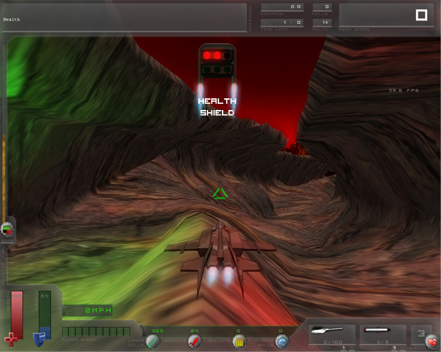

| Computer Graphics TU Braunschweig |
Das HUD (head-up display) im Spiel hat zwei wesentliche Aufgaben. Zum einen, den Spieler mit wertvollen Informationen wie Lebenspunkte und Schild, Treibstoff, Waffen und Munition, Punkte, etc. zu versorgen. Die andere wesentliche Aufgabe ist, dem Spiel mehr Spieltiefe zu verleihen. Zum einen durch die Optik des HUDs, "Es sollte sich anfühlen, als säße man in einem Cockpit", und durch die Spiel-Features wie die Super-Boost-Anzeige.
Wird die Super-Boost-Anzeige zu heiß, fängt die sie an rot zu blinken, und warnt davor, dass das Raumschiff kurz vor der Explosion steht. Der Spieler wird von einem Intercom (oben links) unterstütz, das vor Gegnern warnt, oder Informationen darüber gibt, welche Gegenstände man eingesammelt hat. Ein besonderes kleines Feature ist dabei, das der Text durch die Microsoft-Speech Engine vorgelesen wird.
| (a) HUD UML-Klassendiagramm |
Das Erstellte HUD umfasst mehrere umfangreiche Features, die das Darstellen von Text und Grafiken erlauben. Sowohl die Text- als auch die Grafikelemente erben von einer HudControl Klasse, in der die Bewegung und die Effekte der Elemente geregelt wird. Mögliche Effekttypen sind:
Zusammen mit dem Start- und Endpunkt eines Elementes, sowie der Lebensdauer wird die aktuelle Position der Elemente berechnet und der zugehörige Effekt benutzt. Bei nichtbewegten Elementen stimmten Start- und Zielposition einfach überein, die Berechnung der Position wird ausgesetzt. Zusätzlich zu diesen Informationen kann jedem Textelement eine Farbe sowie ein Text (Wahlweise ein statischer string oder ein dynamisches Property). Analog gehört zu jedem Grafikelement die Textur. Als kleines Extra ist es möglich den sichtbaren Bereich einer Textur zu "beschneiden". So ist es möglich Zahlenwerte als Balken darzustellen. Auf dem Folgenden Bild sind die wichtigsten Zonen des HUD gekennzeichnet (einfach mit der Maus über das Bild fahren).
|  |
| (b) HUD |
TU Braunschweig
- Fakultät für Mathematik und Informatik
- Computer Graphics - Teamprojekt Canyonshooter
{kind=link}